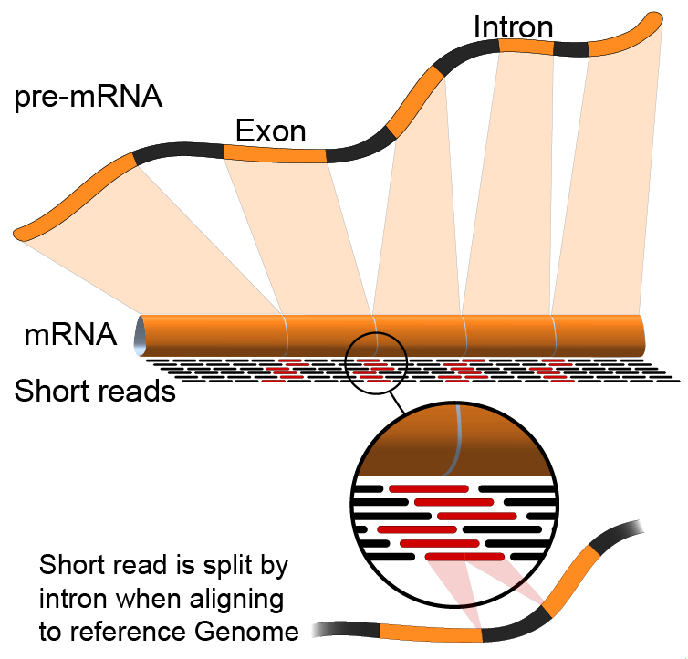
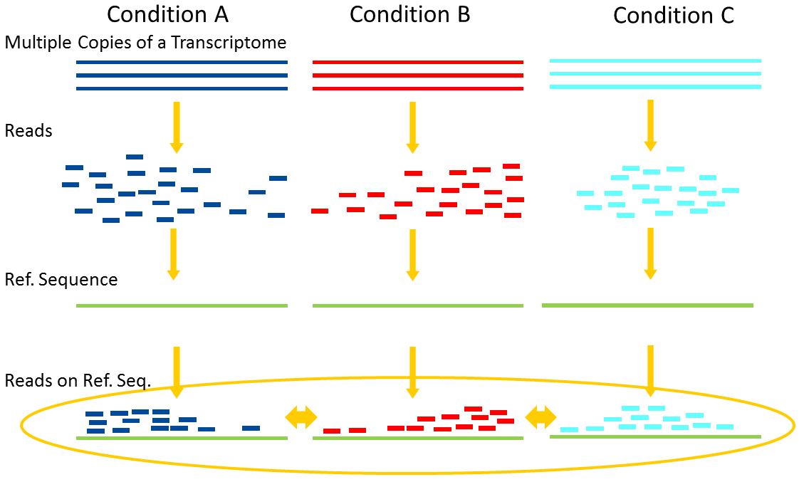

Introduction to Transcriptomics
Contributors
What is RNA sequencing?
RNA
- Transcribed form of the DNA
- Active state of the DNA
.footnote[Credit: Thomas Shafee]
{kind=link}
RNA sequencing
- RNA quantification at single base resolution
- Cost efficient analysis of the whole transcriptome in a high-throughput manner
.footnote[Credit: Thomas Shafee (adapted)]
{kind=link}
Where does my data come from?
.footnote[Zang and Mortazavi, Nature, 2012]
Principle of RNA sequencing
.footnote[Korf, Nat Met, 2013]
Challenges of RNA sequencing
- Different origin for the sample RNA and the reference genome
- Presence of incompletely processed RNAs or transcriptional background noise
- Sequencing biases (e.g. PCR library preparation)
Benefits of RNA sequencing
2 main research applications for RNA-Seq
-
Transcript discovery
Which RNA molecules are in my sample?
Novel isoforms and alternative splicing, Non-coding RNAs, Single nucleotide variations, Fusion genes
-
RNA quantification
What is the concentration of RNAs?
Absolute gene expression (within sample), Differential expression (between biological samples)
How to analyze RNA seq data for RNA quantification?
RNA quantification
.footnote[Pepke et al, Nat Met, 2009]
Overview of the Data Processing
- No available standardized workflow
- Multiple possible best practices for every dataset
Data Pre-processing
- Adapter clipping to trim the sequencing adapters
- Quality trimming to remove wrongly called and low quality bases
.footnote[See NGS Quality control]
Annotation of RNA-Seq reads
Simple mapping on a reference genome? More challenging

.footnote[Credit: Rgocs]
{kind=link}
Annotation of RNA-Seq reads
3 main strategies for annotations
- Transcriptome mapping
- Genome mapping
- De novo transcriptome assembly and annotation
Transcriptome mapping
See NGS Mapping
- Need reliable gene models
- No detection of novel genes
.footnote[Figures by Ernest Turro, EMBO Practical Course on Analysis of HTS Data, 2012]
Genome mapping
Splice-aware read alignment
Detection of novel genes and isoforms
.footnote[Figures by Ernest Turro, EMBO Practical Course on Analysis of HTS Data, 2012]
Transcriptome and Genome mapping
Needed
- Reference genome/transcriptome in FASTA
- Annotations of known genes, … in GTF
Where to find?
- Joint projects to produce and maintain annotations on selected organisms: EMBL-EBI, UCSC, RefSeq, Ensembl, …
De novo transcriptome assembly
No need for a reference genome …
- Assembly into transcripts
- Map reads back
Quantification
What is the expression level of the genomic features?
- Counting the number of reads per features: Easy!!
- Challenges
- How to handle multi-mapped reads (i.e. reads with multiple alignments)?
- How to distinguish between different isoforms?
- At gene level?
- At transcript level?
- At exon level?
Differential Expression Analysis
.image-75[]
Account for variability of expression across biological replicates
with the help of counts
Differential Expression Analysis: Normalization
Make the expression levels comparable across
- By Features: genes, isoforms
- By Samples
- Methods
.footnote[“Only the DESeq and TMM normalization methods are robust to the presence of different library sizes and widely different library compositions…” - Dillies et al., Brief Bioinf, 2013]
Impact of sequencing depth and number of replicates
.image-75[]
.footnote[Conesa et al, Genome Biol, 2016]
Recommendation: At least 3 biological replicates
Speaker Notes
- Number of replicates has greater effect on DE detection accuracy than sequencing depth (more replicates = increased statistical power)
- DE detection of lowly expressed genes is very sensitive to number of reads and replication
- DE detection of highly expressed genes possible already at low sequencing depth
Visualization
-
Integrative Genomics Viewer (IGV) or Trackster
Visualization of the aligned BAM files
-
Quantitative visualization of read coverage along exons and splice junctions
-
Visualization package for Cufflinks high-throughput sequencing data
Thank you!
This material is the result of a collaborative work. Thanks to the Galaxy Training Network and all the contributors! Tutorial Content is licensed under
Creative Commons Attribution 4.0 International License.
Tutorial Content is licensed under
Creative Commons Attribution 4.0 International License.